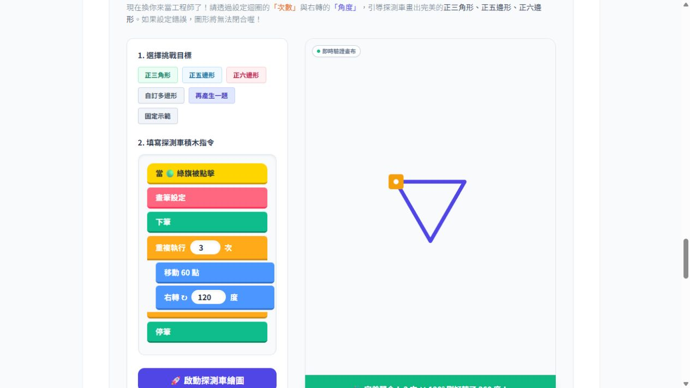
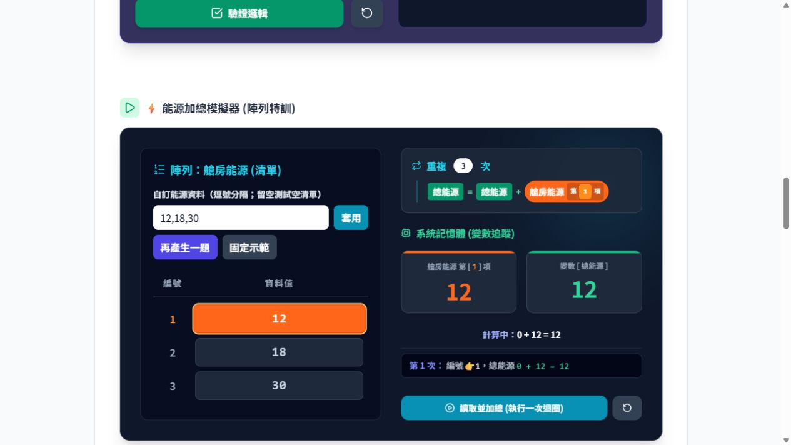

支援教學經驗較少的教師
先讀教案、試跑範例，再依流程示範與提問
課後用紀錄表和規準檢視學生的理解
七年級程式設計｜八年級演算法
各 6 單元，建議各 12 節
講者備註與資料來源
本教材包以教學經驗較少的教師為主要設計對象。第一次帶這門課的教師，可先確認學生先備能力、閱讀逐課教案並試跑範例，再依課程流程示範、提問和收取成果。教案、互動教材、範例、紀錄表與評量規準共同支援教師完成備課、授課和回饋。七年級以「結構化程式與互動作品」歸入程式設計，八年級以「資料結構與演算法應用」歸入演算法。兩套課程各以作品建構及資料處理規則為主軸，並結合實作與推理。教材設計的預期效益，仍需教師試用及學生學習資料進一步檢視。
講者備註與資料來源
這一頁先交代教材包的完整配套。課程總覽協助選課，逐課教案提供目標與流程，互動教材讓教師停下來提問，Scratch 範例支援實作，紀錄表與四級規準協助收取成果及回饋。學習紀錄目前以 Markdown 模板提供，教師可複製到既有文件或列印。評量規準放在逐課教案頁，正式證據由教師自行收取。公開教材瀏覽免登入，教師仍需事先確認 Scratch 編輯環境與校內帳號安排。
01選課並看先備要求
年級總覽與逐課教案
完成條件 確認學生先備，圈出本課必做任務
02試走一次操作
單元模擬器與範例檔
完成條件 確認設備，選好在哪一步提問
03分享本課連結
每課獨立網址
完成條件 學生可直接進入該單元
04指定一份離堂證據
學習紀錄表與四級規準
完成條件 用校內既有方式收取成果
先選一個單元試走，確認要問什麼、收什麼
講者備註與資料來源
初次使用本教材授課時，先依教案確認學生先備能力與必做任務，再試跑示範、確認設備與 Scratch 環境。試走時可圈出一個要停下提問的步驟，並先選定要收的作品或紀錄。每課有獨立網址，可直接分享給學生。沿用既有備課與成果收取方式，不需增加班級管理系統。網站不自動收作業或儲存正式成績。
心智圖主分類・程式設計
七年級｜結構化程式與互動作品
01起步診斷
讀懂積木用途，判斷安全情境
成果 積木說明與判斷理由
02三大結構
預測結果，定位流程錯誤
成果 分支與迴圈預測紀錄
03迴圈多邊形
整理重複動作與轉角規律
成果 新邊數作品與規則說明
04變數螺旋
追蹤變數初始值與更新位置
成果 前三輪追蹤與圖形比較
05幾何曼陀羅
整合迴圈與變數，比較設定
成果 作品與參數選擇理由
06防禦網專題
多組資料測試並修正作品
成果 作品、測試與方案理由
讀懂程式 → 規劃與實作 → 除錯與測試
星際防禦工程師主題串聯六單元。自訂積木與參數為進階延伸。
講者備註與資料來源
七年級用星際防禦工程師情境串聯六個單元，從讀懂積木與預測結果開始，經迴圈和變數追蹤，最後完成可調參數並可測試的防禦網。各單元圖卡列出教師可收取的成果，讓教授看見課程進程與採證要求的關聯。第5課核心是迴圈與變數，自訂積木與參數供進階延伸。第6課將參數測試連到方案選擇，學生須說明有效與省資源的理由。流程推理讓學生規劃、解釋與修正自己的程式，與程式設計主分類相互連結。
01清單與搜尋
理解索引與搜尋停止條件
成果 操作對照、搜尋作品
02音符走訪
依索引讀取，判斷素材使用
成果 短旋律與授權理由
03能源分析
追蹤累加，處理空清單
成果 多筆、單筆、空清單紀錄
04不重複抽取
追蹤候選與已選清單
成果 抽取作品與不重複理由
05洗牌與排序
比較移轉、交換與停止規則
成果 過程追蹤與排序作品
06對決專題
整合處理步驟，驗證資料規則
成果 模組作品、流程與三組測試
執行前、執行中、執行後，都能說明資料如何改變
星際陣列指揮官主題。先備包含事件、條件、迴圈與變數。
講者備註與資料來源
八年級沿用星際任務情境，以清單作為資料結構主軸，逐步發展索引、走訪、搜尋、累加、抽取、洗牌與排序，最後用自訂積木分工完成對決專題，將資料處理規則寫成可執行程式，再用不同案例驗證。各課教師都可要求學生在執行前預測、執行中追蹤、執行後驗證。第3課的指定成果是資料模擬、追蹤與案例說明，參考積木用於閱讀。學生獨立程式成果由第1、2、4、5、6課採集。
程式設計 → 七年級
結構化程式與互動作品
以積木、迴圈與變數建構作品
流程推理支援程式規劃、除錯與測試
程式與流程推理各 8 項
依繪圖與防禦網的作品主軸歸類
演算法 → 八年級
資料結構與演算法應用
以清單狀態與資料處理規則為主軸
透過追蹤、比較與邊界測試驗證規則
資料結構與推理 15 項、程式 6 項
教學重點與內容分布共同支持歸類
單一歸屬依課程主軸、核心能力與最終成果判定
兩套課程均結合實作與推理。按 N 查看 45 項必做任務的完整分布與計算。
講者備註與資料來源
對教授與組員的說明
這次心智圖每套教材只能選一個分支，我們以課程主軸、核心能力與最終成果共同選定主分類，任務數提供內容分布的佐證。建議節點為「程式設計 → 七年級｜結構化程式與互動作品」及「演算法 → 八年級｜資料結構與演算法應用」。這是本教材包的展示分類，各單元的課綱對照仍依實際活動與學習證據呈現。
七年級的定位是「七年級實作與流程推理並重」。程式設計與演算法／資料結構推理各有8項，另有4項混合與2項其他任務，數量並列時，進一步看課程如何組織。學生從積木、迴圈與變數出發，逐步建構多邊形、螺旋、曼陀羅與防禦網，並用預測、除錯和多組測試改善作品，因此選擇「程式設計」作主分類。流程推理是建構與檢查程式的重要學習內容。
八年級的定位是「八年級著重資料結構與演算法理解」。課程以清單、索引和中間狀態為主軸，要求學生解釋走訪、累加、搜尋、抽取、洗牌與排序的步驟，並驗證停止條件、不重複規則與邊界情況。任務清單有15項演算法／資料結構推理、6項程式設計，另有1項混合與1項其他內容，因此選擇「演算法」作主分類。清單程式、自訂積木與對決作品，讓學生將資料處理規則付諸實作。
任務數描述教材內容分布。每個必做任務族等權計數，時數、難度、工作量與學習成效需另行判讀。完整四類分布、逐課計數及比較分母保留於下方，討論時可回到教案、學生任務與成果條件複核。
附錄・任務分類與比例計算
P 程式設計、A 演算法／資料結構推理、M 混合、O 其他。這是本教材的內容分類。每個可獨立檢核的必做任務族各計一票，選做與同一概念的重複練習排除。
全部45項必做任務的四類分布
| 範圍 | 程式設計 | 演算法／
資料結構 | 混合 | 其他 |
|---|
七年級
22 項 | 8 項
36.4% | 8 項
36.4% | 4 項
18.2% | 2 項
9.1% |
|---|
八年級
23 項 | 6 項
26.1% | 15 項
65.2% | 1 項
4.3% | 1 項
4.3% |
|---|
合計
45 項 | 14 項
31.1% | 23 項
51.1% | 5 項
11.1% | 3 項
6.7% |
|---|
按全部必做任務數計算，各類任務以相同權重計數。
可分離的程式設計與推理任務
P 程式設計 A 演算法／資料結構推理此比較排除 M 混合與 O 其他。分母 P＋A＝程式設計＋演算法／資料結構推理。七年級 8／16＝50.0%，八年級 6／21＝28.6%、15／21＝71.4%。合計 14／37＝37.8%、23／37＝62.2%。
上方完整分布的分母則為七年級22項、八年級23項、合計45項。混合任務保留為一類。比例按任務數計算，時數、難度與學生工作量另行考量。
七年級逐課計數
P 程式設計 A 演算法／資料結構推理 M 混合 O 其他| 單元 | 逐步建立的能力 | P／A／M／O 項數 |
|---|
| 1 起步診斷 | 讀懂積木用途，判斷安全情境 | 2／0／0／1 |
| 2 三大結構 | 用流程圖預測結果、定位錯誤 | 0／3／1／0 |
| 3 迴圈多邊形 | 將重複動作整理為迴圈與轉角規律 | 2／1／1／0 |
| 4 變數螺旋 | 追蹤初始值、更新位置與圖形變化 | 2／1／1／0 |
| 5 曼陀羅 | 整合迴圈、變數並比較不同設定 | 1／2／0／0 |
| 6 防禦網專題 | 製作互動作品，以多組資料測試修正 | 1／1／1／1 |
八年級逐課計數
P 程式設計 A 演算法／資料結構推理 M 混合 O 其他| 單元 | 逐步建立的能力 | P／A／M／O 項數 |
|---|
| 1 清單與搜尋 | 理解索引，逐項搜尋並說明停止條件 | 1／2／0／0 |
| 2 音符走訪 | 依索引播放旋律，檢查素材使用責任 | 1／2／0／1 |
| 3 能源分析 | 逐輪追蹤累加器，檢查空清單邊界 | 0／2／0／0 |
| 4 不重複抽取 | 追蹤候選與已選清單，驗證不重複 | 1／3／0／0 |
| 5 洗牌與排序 | 比較移轉與交換規則，確認資料不遺漏 | 2／4／0／0 |
| 6 對決專題 | 以模組處理資料，測試正常與不足情境 | 1／2／1／0 |
分類由一位分析者依現有教材與教案建立。任務切分粒度會影響數字，修改必做任務後需重新計數，四捨五入可能造成加總差異。混合任務的敏感度檢查與逐項來源見完整分析文件。
八年級第 3 課・能源庫存分析，建議分兩節完成
01課前準備
讀教案，以範例清單 12、18、30 練習逐筆累加
學生學習 確認清單、索引與變數先備
02第一節引導
投影模擬器，先問下一輪累計
學生學習 先預測，再逐輪核對累計值
03第一節操作
逐輪執行，示範填寫追蹤表
學生學習 記錄目前項目、累計與筆數
04第二節延伸
換一組資料，示範空清單
學生學習 測多筆、單筆與空清單
05收取與回饋
收離堂紀錄，依規準回饋
學生學習 說明一個差異與修正理由
教案安排步驟，模擬器示範過程，紀錄表檢核理解
講者備註與資料來源
這一課示範教學經驗較少的教師如何依教材包完成兩節課。課前看八年級第3課教案，先用教材的三筆能源範例數值 12、18、30 試跑累加，確認逐輪累計為 12、30、60。第一節先讓學生預測，再逐輪核對索引、目前項目與累計總和，留下資料追蹤表。第二節改用新資料，分別測多筆、單筆和空清單，最後收一筆差異與修正理由。資料追蹤規準可作形成性回饋參考，教師依本課目標調整。這一課的核心成果是追蹤與解釋，教案中的加總程式供閱讀參考。完整課程的 Scratch 實作安排見第4、5頁。
01情境任務與目標
確認要解決的問題與完成條件
教師支援 本課目標與情境提問
02概念示範與引導
先預測，再操作核對差異
教師支援 投影互動介面、停下提問
03獨立任務與驗證
依目標實作程式或追蹤資料
教師支援 選用範例與分級支援
04成果證據
留下作品、程式說明或追蹤表
教師支援 沿用現成紀錄與規準
05離堂檢核
用自己的話解釋規則與修正
教師支援 以理由判讀學生理解
操作有目標，結果要驗證，理解要留下可說明的證據
七年級連到程式作品，八年級依單元採資料追蹤或程式實作。
講者備註與資料來源
我把共同學習節奏整理成情境與目標、示範引導、獨立任務與驗證、成果證據、離堂檢核五段。每課導航明列目標、行動、證據與自我檢核，學生知道本課要理解什麼，教師也有現成提問起點。這是活動安排，不是所有頁面都具備五個按鈕或自動闖關。獨立任務依教案目標安排。七年級逐步銜接程式作品與測試，八年級第3課核心是資料模擬與追蹤，其餘有程式成果要求的單元則收取作品與資料規則說明。第1課診斷以說明積木為主，教師按單元採證。網頁先提供觀察與驗證，教師再視任務銜接 Scratch 實作、成果紀錄與離堂理由。一節45分鐘可參考5分鐘情境、8分鐘示範、27分鐘操作與成果紀錄、5分鐘檢核，依班級調整。分鐘不參與內容占比計算。

開啟本課互動教材先預測
「畫三角形，應轉幾度？」
若答 60 度，請比較內角與轉向角
再核對
一次只改次數或轉角
追問「哪個改動影響閉合？」
換題實作
換成五邊形，在 Scratch 實作
用重複次數與轉角積木驗證規律
收取 Scratch 作品、參數紀錄與轉角理由
講者備註與資料來源
教師先問三角形每次要轉幾度，請學生寫出預測理由，再以3次、120度執行核對。若有人填60度，可追問內角與角色行進方向改變的角度有何差異。接著一次只改次數或轉角，要求用圖形指出差異。最後改為五邊形，讓學生用360除以邊數求得72度，再把重複5次與轉向72度組成自己的 Scratch 程式，測試能否閉合。數學規律經由積木結構與作品測試實現，形成程式設計的學習證據。這些是建議提問與預期回應，實際學生回答由課堂蒐集。介面可調參數和圖形並列，讓教師有共同提問與比較的依據。截圖擷取日期為2026-10-03。

開啟本課互動教材執行前
「第二輪累計是 18 還是 30？」
若答 18，先請學生找上一輪累計
執行中
清單 12、18、30，逐輪累計 12、30、60
追問「從哪一輪開始不同？」
執行後
「空清單的平均怎麼處理？」
預期能指出筆數為零的問題
收取多筆、單筆、空清單追蹤表與解釋
講者備註與資料來源
清單固定為 12、18、30。先問第二輪累計是18還是30，若學生答18，請他分別指出目前項目18與上一輪累計12，再說明12＋18為什麼得到30。逐步執行時核對累計12、30、60，預測不同就追問第一個差異發生在哪一輪。執行後算出平均20，再用單筆和空清單檢查邊界，請學生說明筆數為零時須先處理，平均無法直接以總和除以零計算。建議回應屬於教學規劃，課堂可用紀錄表取得實際證據。這一課以模擬、追蹤和解釋為指定成果。截圖擷取日期為2026-10-03。
需要支持
先用三筆資料與紙卡
提供部分完成的追蹤表
檢核 說出一輪資料如何變化
可獨立練習
換新資料，自行預測與追蹤
對照結果後訂正
檢核 指出差異並說明修正
準備進階
增加資料量，提出邊界案例
減少提示後再解釋
檢核 驗證新案例與處理規則
12 課另附三級練習，提示後保留同題重試
教師依當前表現調整支援，並以過程紀錄與理由回饋。
講者備註與資料來源
本頁以八年級清單課示範教師可做的差異化教學安排，依學生當前的表現彈性調整。七年級依教案提供半成品程式與追蹤欄位，先完成起點辨識、下一步預測及執行驗證，進階者再增加參數或防禦條件。兩年級各依作品建構或資料處理目標調整支援。紙卡、三筆資料與部分追蹤表來自八年級教案的支持策略，教師可逐步減少提示。進階學生先完成共同檢核，再增加資料量、邊界或規則比較。網站十二課另提供基礎、標準、挑戰三級練習，學生可自行選難度。首次答錯提示、同題再錯提供詳解並降低下一題難度，連續兩道新題首次答對則升級。這是當次作答的規則式練習，教師仍須看理由、追蹤與作品。
節錄八年級能源分析紀錄表，以下為教師填寫示例
多筆資料｜12、18、30
12 → 30 → 60
結果 總和 60 筆數 3 平均 20
空清單
尚無項目可讀取
結果 總和 0 筆數 0
筆數為零，先處理邊界
沿用資料追蹤規準回饋
1需要支持
依提示指出目前項目與位置
2部分達成
有答案，關鍵中間值仍有缺漏
3達成目標
中間值完整，能核對輸入與輸出
4遷移與改善
能用中間值定位錯誤，修正後再測
七年級另看程式作品、結構說明與測試紀錄
講者備註與資料來源
上方圖卡取自既有學生學習紀錄表「八年級：累加與空清單」，分別標示總和與筆數。數值與回答是教師講解示例。完整模板另有單筆案例，正式使用請收齊多筆、單筆、空清單三種情況。下方以教案資料追蹤面向的四級規準改寫為本課形成性回饋語，第一級另依本課索引理解提供提示。要判斷遷移與改善，應另給新資料或含錯誤的追蹤，收取定位、修正與重測紀錄。教師再追問「哪裡不同？你如何修正？」並用紙本或校內既有平台收取。七年級的程式設計評量，依教案檢查作品中事件、迴圈與變數的分工，以及參數測試、修正與重測紀錄。八年級其他單元另依目標收取清單程式、模組作品與處理規則說明，各年級再依單元採集數位表達與倫理理由。
七年級程式基礎
資 A-IV-1、資 P-IV-1、資 P-IV-2
成果 繪圖作品與變數追蹤
八年級資料與演算法
資 A-IV-2、資 A-IV-3、資 P-IV-3
成果 清單程式與追蹤紀錄
八年級模組化實作
資 P-IV-4、資 P-IV-5
成果 自訂積木與測試紀錄
資訊科技使用責任
資 H-IV-1／2／3、資 H-IV-5（部分）
成果 個資、安全與授權理由
課綱目標以學生作品、過程與說明檢核
運 t-IV-4、運 p-IV-1、運 a-IV-2。資 H-IV-4 未列入。
講者備註與資料來源
我依官方科技領域課綱（107年9月）建立逐課目標、活動與證據對照。心智圖以主分類定位整套教材，本頁依實際任務列出跨主題對應。七年級的流程推理支援程式建構，八年級的清單程式與模組化實作讓資料處理規則得以執行及驗證，兩者都與各自主軸連結。學習表現見印刷第7頁（PDF第11頁），學習內容及年級安排見第10～11頁（PDF第14～15頁），細部說明見附錄三第42～44頁（PDF第46～48頁）。這是教材設計者的教學判讀，沒有宣稱官方認證或完整覆蓋各條目。七年級第1課處理個資、合理使用與帳號安全；八年級音符課複習資 H-IV-1、資 H-IV-2，僅部分融入資 H-IV-5 的使用倫理，沒有網路成癮、網路交友等活動，所以不列資 H-IV-4。八年級第3課以資料追蹤為核心，參考積木閱讀不當成學生程式實作證據。運 t-IV-4 看問題解析的理由，運 p-IV-1 須有資訊科技組織與表達的證據，運 a-IV-2 依已教情境的判斷理由採證。四級規準是本教材的任務規準，達成本課目標不表示整項課綱已完成。七年級第5課模組化仍是選做延伸，第6課資 T-IV-1 為入門應用。
整套採用
沿一個年級的六單元安排
參考建議十二節進度
確認條件 先備、設備與學習節奏
單元補充
已有迴圈基礎的班級
選用多邊形單元練轉角規律
確認條件 能讀懂重複與轉向積木
改編延伸
把能源數值換成班級資料
保留逐輪追蹤與空清單檢核
確認條件 資料量、難度與檢核一致
設備受限
先用紙卡與追蹤表預測
恢復設備後執行驗證
確認條件 安排網頁與 Scratch 實作時間
情境與資料可調整，目標和檢核一起對照
講者備註與資料來源
本教材包提供整套、單元與改編三種採用方式。每個年級各六單元、建議十二節，教師依先備調整。單元選用仍需看教案先備，八年級尤其需要事件、條件、迴圈與變數。能源分析可將數值換成班級匿名統計或物資資料，教師先控制資料量與難度，保留累加和邊界檢核。設備或連線受限時可先用紙卡和追蹤表，再安排數位驗證與需要的 Scratch 實作。教案、範例及帳號支援的入口在第2頁，想進一步改編網站可參考復刻手冊。
情境串聯與能力進程
依六單元安排提問與任務
希望支援的理解 由單一概念走向整合應用
可調參數與逐步執行
停下畫面，請學生預測與核對
希望支援的理解 連結規則、過程與結果
新案例與分級支援
依表現調整資料量與提示
希望支援的理解 修正推理並驗證新情境
教案、紀錄與評量配套
沿用流程與規準收取成果
希望支援的理解 用作品及理由說明理解
教師可觀察的證據包含作品、追蹤表與修正理由
目前尚未量測學習成效與教師備課時間。
講者備註與資料來源
教材包希望降低教學經驗較少的教師組織課堂的負擔。教案協助掌握順序，互動介面讓教師能逐步示範與提問，評量工具協助判斷學生理解到哪一步。星際情境串聯主題，可調參數與逐步執行提供停下提問的依據，新資料與提示提供不同程度的練習，紀錄與規準協助教師將操作連到理解。教師可觀察學生能否解釋參數差異、指出第一個錯誤步驟，以及換資料後仍能說明規則。這些是預期教學支持與建議採證，目前尚未量測備課省時或學習成效。後續可先蒐集教師試用時的準備負擔、操作困難與改編需求，再依學生作品和追蹤表修訂教材。
課前選好一課
看先備、讀教案
試走案例與 Scratch 環境
課中帶著提問
先預測，再操作核對
依學生回答決定下一個提示
先試走示範，再用一筆學習證據確認學生理解
開啟教材入口 七年級教案 八年級教案
講者備註與資料來源
初次使用本教材授課的教師，可從符合學生先備的一個單元開始。七年級可從迴圈多邊形示範程式設計，八年級可從能源分析示範資料追蹤。課前讀教案並試走案例，課中依提問要求學生先預測、再核對與解釋，課後留下紀錄或作品並給下一步回饋。成套配套希望讓教師將備課重點放在班級需要與教學判斷。可依試用回饋逐步調整教材的語句、支援程度、時間安排與評量工具。